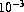
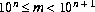
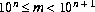
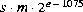
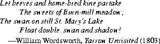

Contents | Prev | Next | Index
20.10 The Class java.lang.Double
public final class Double extends Number {
public static final double MIN_VALUE =
5e-324;
public static final double MAX_VALUE =
1.7976931348623157e+308;
public static final double NEGATIVE_INFINITY = -1.0/0.0;
public static final double POSITIVE_INFINITY = 1.0/0.0;
public static final double NaN = 0.0/0.0;
public Double(double value);
public Double(String s)
throws NumberFormatException;
public String toString();
public boolean equals(Object obj);
public int hashCode();
public int intValue();
public long longValue();
public float floatValue();
public double doubleValue();
public static String toString(double d);
public static Double valueOf(String s)
throws NullPointerException, NumberFormatException;
public boolean isNaN();
public static boolean isNaN(double v);
public boolean isInfinite();
public static boolean isInfinite(double v);
public static long doubleToLongBits(double value);
public static double longBitsToDouble(long bits);
}
20.10.1 public static final double MIN_VALUE = 5e-324;
The constant value of this field is the smallest positive nonzero value of type
double. It is equal to the value returned by Double.longBitsToDouble(0x1L).
20.10.2 public static final double MAX_VALUE = 1.7976931348623157e+308;
The constant value of this field is the largest positive finite value of type double.
It is equal to the returned by:
Double.longBitsToDouble(0x7fefffffffffffffL)
20.10.3 public static final double NEGATIVE_INFINITY = -1.0/0.0;
The constant value of this field is the negative infinity of type double. It is equal
to the value returned by Double.longBitsToDouble(0xfff0000000000000L).
20.10.4 public static final double POSITIVE_INFINITY = 1.0/0.0;
The constant value of this field is the positive infinity of type double. It is equal to
the value returned by Double.longBitsToDouble(0x7ff0000000000000L).
20.10.5 public static final double NaN = 0.0/0.0;
The constant value of this field is the Not-a-Number of type double. It is equal to
the value returned by Double.longBitsToDouble(0x7ff8000000000000L).
20.10.6 public Double(double value)
This constructor initializes a newly created Double object so that it represents the
primitive value that is the argument.
20.10.7 public Double(String s)
throws NumberFormatException
This constructor initializes a newly created Double object so that it represents the
floating-point value of type double represented by the string. The string is converted
to a double value in exactly the manner used by the valueOf method
(§20.9.17).
20.10.8 public String toString()
The primitive double value represented by this Double object is converted to a
string exactly as if by the method toString of one argument (§20.10.15).
Overrides the toString method of Object (§20.1.2).
20.10.9 public boolean equals(Object obj)
The result is true if and only if the argument is not null and is a Double object
that represents the same double value as this Double object. For this purpose,
two double values are considered to be the same if and only if the method
doubleToLongBits (§20.10.21) returns the same long value when applied to
each. Note that even though the == operator returns false if both operands are
NaN, this equals method will return true if this Double object and the argument
are both Double objects that represent NaN. On the other hand, even though the
== operator returns true if one operand is positive zero and the other is negative
zero, this equals method will return false if this Double object and the argument
represent zeroes of different sign. This allows hashtables to operate properly.
Overrides the equals method of Object (§20.1.3).
20.10.10 public int hashCode()
The result is the exclusive OR of the two halves of the long integer bit representation,
exactly as produced by the method doubleToLongBits (§20.10.21), of the
primitive double value represented by this Double object. That is, the hashcode is
the value of the expression:
(int)(v^(v>>>32))
where v is defined by:
long v = Double.doubleToLongBits(this.longValue());
Overrides the hashCode method of Object (§20.1.4).
20.10.11 public int intValue()
The double value represented by this Double object is converted (§5.1.3) to type
int and the result of the conversion is returned.
Overrides the intValue method of Number (§20.6.1).
20.10.12 public long longValue()
The double value represented by this Double object is converted (§5.1.3) to type
long and the result of the conversion is returned.
Overrides the longValue method of Number (§20.6.2).
20.10.13 public float floatValue()
The double value represented by this Double object is converted (§5.1.3) to type
float and the result of the conversion is returned.
Overrides the floatValue method of Number (§20.6.3).
20.10.14 public double doubleValue()
The double value represented by this Double object is returned.
Overrides the doubleValue method of Number (§20.6.4).
20.10.15 public static String toString(double d)
The argument is converted to a readable string format as follows. All characters
mentioned below are ASCII characters.
- If the argument is NaN, the result is the string
"NaN".
- Otherwise, the result is a string that represents the sign and magnitude (absolute value) of the argument. If the sign is negative, the first character of the result is
'-' ('\u002d'); if the sign is positive, no sign character appears in the result. As for the magnitude m:
- If m is infinity, it is represented by the characters
"Infinity"; thus, positive infinity produces the result "Infinity" and negative infinity produces the result "-Infinity".
- If m is zero, it is represented by the characters
"0.0"; thus, negative zero produces the result "-0.0" and positive zero produces the result "0.0".
- If m is greater than or equal to  but less than
 , then it is represented as the integer part of m, in decimal form with no leading zeroes, followed by
, then it is represented as the integer part of m, in decimal form with no leading zeroes, followed by '.' (\u002E), followed by one or more decimal digits representing the fractional part of m.
- If m is less than
 or not less than
or not less than  , then it is represented in so-called "computerized scientific notation." Let n be the unique integer such that ; then let a be the mathematically exact quotient of m and
, then it is represented in so-called "computerized scientific notation." Let n be the unique integer such that ; then let a be the mathematically exact quotient of m and  so that . The magnitude is then represented as the integer part of a, as a single decimal digit, followed by
so that . The magnitude is then represented as the integer part of a, as a single decimal digit, followed by '.' (\u002E), followed by decimal digits representing the fractional part of a, followed by the letter 'E' (\u0045), followed by a representation of n as a decimal integer, as produced by the method Integer.toString of one argument (§20.7.12).
How many digits must be printed for the fractional part of m or a? There must be at least one digit to represent the fractional part, and beyond that as many, but only as many, more digits as are needed to uniquely distinguish the argument value from adjacent values of type double. That is, suppose that x is the exact mathematical value represented by the decimal representation produced by this method for a finite nonzero argument d. Then d must be the double value nearest to x; or if two double values are equally close to x, then d must be one of them and the least significant bit of the significand of d must be 0.
[This specification for the method toString is scheduled for introduction in Java version 1.1. In previous versions of Java, this method produces Inf instead of Infinity for infinite values. Also, it rendered finite values in the same form as the %g format of the printf function in the C programming language, which can lose information because it produces at most six digits after the decimal point.]
20.10.16 public static Double valueOf(String s)
throws NullPointerException, NumberFormatException
The string s is interpreted as the representation of a floating-point value and a
Double object representing that value is created and returned.
If s is null, then a NullPointerException is thrown.
Leading and trailing whitespace (§20.5.19) characters in s are ignored. The rest of s should constitute a FloatValue as described by the lexical syntax rule:
FloatValue:
Signopt Digits . Digitsopt ExponentPartopt
Signopt . Digits ExponentPartopt
where Sign, Digits, and ExponentPart are as defined in §3.10.2. If it does not have
the form of a FloatValue, then a NumberFormatException is thrown. Otherwise,
it is regarded as representing an exact decimal value in the usual "computerized
scientific notation"; this exact decimal value is then conceptually converted to an
"infinitely precise" binary value that is then rounded to type double by the usual
round-to-nearest rule of IEEE 754 floating-point arithmetic. Finally, a new object
of class Double is created to represent the double value.
Note that neither D nor d is permitted to appear in s as a type indicator, as would be permitted in Java source code (§3.10.1).
20.10.17 public boolean isNaN()
The result is true if and only if the value represented by this Double object is
NaN.
20.10.18 public static boolean isNaN(double v)
The result is true if and only if the value of the argument is NaN.
20.10.19 public boolean isInfinite()
The result is true if and only if the value represented by this Double object is
positive infinity or negative infinity.
20.10.20 public static boolean isInfinite(double v)
The result is true if and only if the value of the argument is positive infinity or
negative infinity.
20.10.21 public static long doubleToLongBits(double value)
The result is a representation of the floating-point argument according to the IEEE
754 floating-point "double format" bit layout:
- Bit 63 (the bit that is selected by the mask
0x8000000000000000L) represents the sign of the floating-point number.
- Bits 62-52 (the bits that are selected by the mask
0x7ff0000000000000L) represent the exponent.
- Bits 51-0 (the bits that are selected by the mask
0x000fffffffffffffL) represent the significand (sometimes called the mantissa) of the floating-point number.
- If the argument is positive infinity, the result will be
0x7ff0000000000000L.
- If the argument is negative infinity, the result will be
0xfff0000000000000L.
- If the argument is NaN, the result will be
0x7ff8000000000000L.
In all cases, the result is a long integer that, when given to the longBitsToDouble method (§20.10.22), will produce a floating-point value equal to the argument to doubleToLongBits.
20.10.22 public static double longBitsToDouble(long bits)
The argument is considered to be a representation of a floating-point value according
to the IEEE 754 floating-point "double format" bit layout. That floating-point
value is returned as the result.
- If the argument is
0x7f80000000000000L, the result will be positive infinity.
- If the argument is
0xff80000000000000L, the result will be negative infinity.
- If the argument is any value in the range
0x7ff0000000000001L through 0x7fffffffffffffffL or in the range 0xfff0000000000001L through 0xffffffffffffffffL, the result will be NaN. (All IEEE 754 NaN values are, in effect, lumped together by the Java language into a single value called NaN.)
- In all other cases, let s, e, and m be three values that can be computed from the argument:
int s = ((bits >> 63) == 0) ? 1 : -1;
int e = (int)((bits >> 52) & 0x7ffL);
long m = (e == 0) ?
(bits & 0xfffffffffffffL) << 1 :
(bits & 0xfffffffffffffL) | 0x10000000000000L;
Then the floating-point result equals the value of the mathematical expression
.
Contents | Prev | Next | Index
Java Language Specification (HTML generated by Suzette Pelouch on February 24, 1998)
Copyright © 1996 Sun Microsystems, Inc.
All rights reserved
Please send any comments or corrections to doug.kramer@sun.com